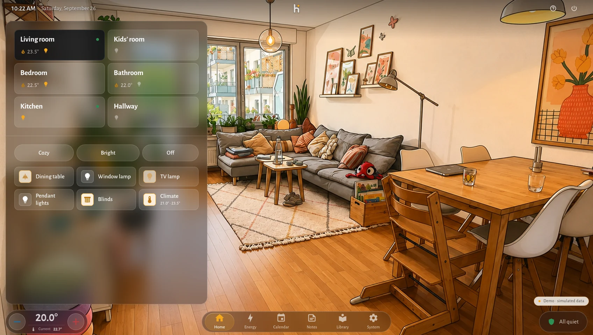

A panel for Home Assistant. An app for Apple Home or Home Assistant.
A picture of your home.
Until you reach for it.
Hauser turns a wall tablet or your phone into a calm view of your home. One room filling the screen, or all of them at once — either way the picture is the state: it follows the sun, the weather and the lamps that are on. Touch it, and the controls come forward. On the wall it runs on Home Assistant. In your pocket it is a native iOS app that also runs with Apple Home, no server needed.
- Home Assistant add-on
- or Docker Compose
- iOS app in TestFlight
- Six languages
- No account, no cloud


Full screen. One room, the whole wall. All rooms. Lit where a lamp is on.
Two views of the same home screen, both captured from the running app. After dark the all-rooms view reads from across the hallway: a room with a lamp on carries its lit picture, a room with every lamp out carries the dark one. Your own rooms are drawn from a photograph you take with your phone.